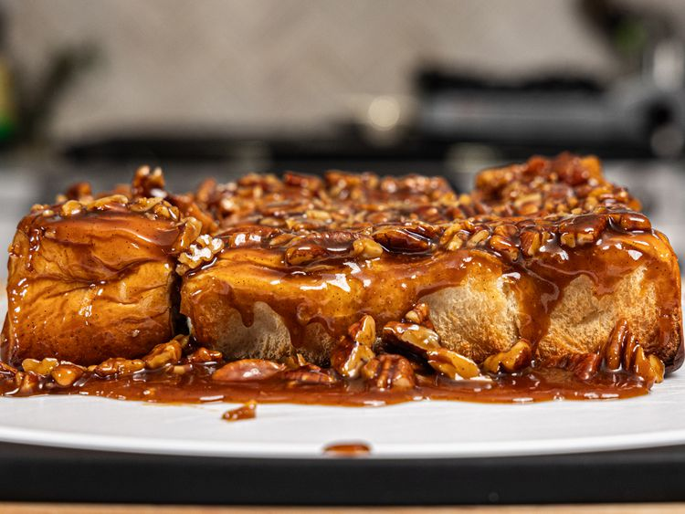

Easy Pecan Buns

Description
Made with just Hawaiian rolls, pecans, and a homemade sticky sauce, this 30-minute breakfast couldn't be easier to make at home. Talk about sweet!
Ingredients
- 1/2 cup unsalted butter
- 1/2 cup brown sugar
- 1 cup chopped pecans
- 2 1/2 tablespoons honey
- 1 pinch salt
- 1 teaspoon vanilla bean paste
- 2 tablespoons heavy whipping cream
- 1 (12-count)-package Hawaiian rolls
Steps
- Preheat the oven to 350 degrees F (175 degrees C). Line a 8x8 cake pan with parchment paper.
- Combine butter, sugar, salt, and honey in a pan set over medium heat. Stir while cooking until the sugar dissolves and mixture starts to bubble a little bit, 3 to 5 minutes.
- Turn off the heat and add vanilla bean paste, heavy cream, and chopped pecans. Mix until the pecans are fully coated and set aside to cool slightly.
- Pour all of the sauce in the pan into the prepared cake pan and spread it out into an even layer. Add Hawaiian rolls, top side down.
- Bake in the preheated oven until the sauce is very bubbly and the buns are slightly browned, 15 to 20 minutes.
- Let it cool for up to 5 minutes before flipping onto a cutting board or plate.